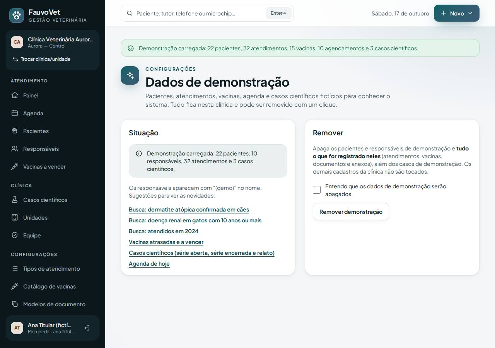
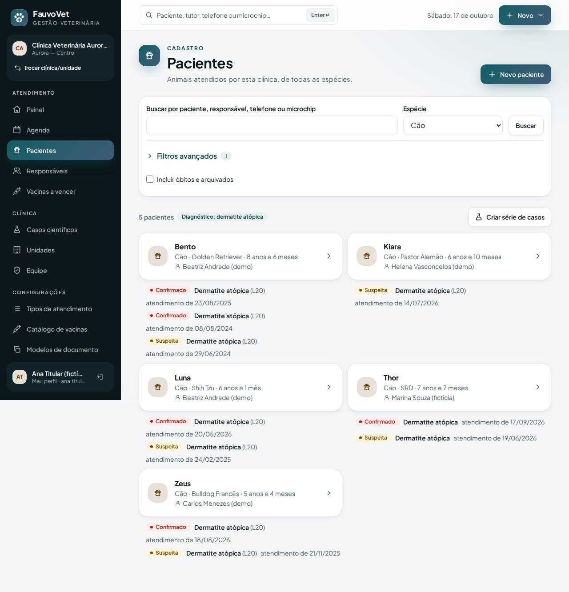
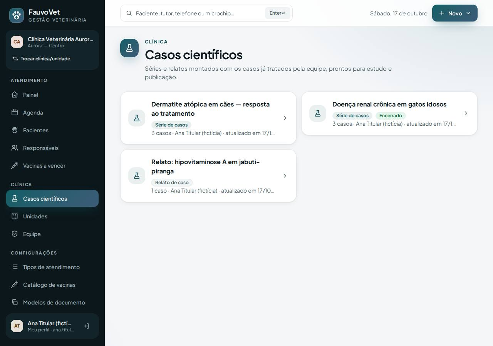
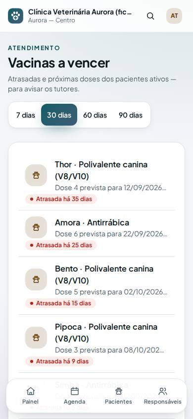

Dados de demonstração: um clique para ver vacinação, busca avançada e casos científicos com conteúdo
ID: 2026-10-18-dados-demonstracao · Data: 18/10/2026 · Versão: 0.12.0 · Módulo: Administração do tenant (ADR-016) · Estado: implementado e testado localmente; publicação a cargo do proprietário (seção 7)
1. Objetivo
Com a clínica de produção vazia, as novidades (busca por diagnóstico/ano/idade, vacinas atrasadas, casos científicos) não aparecem. Esta entrega cria uma tela em que o titular carrega, na própria clínica, um conjunto de dados 100% fictícios, e depois remove tudo com um clique.
Na Locaweb não há SSH, então um script de terminal não rodaria no servidor. Por isso a carga é um botão dentro do sistema, protegido por uma chave no .env do servidor.




2. O que mudou
- Menu → Configurações → Dados de demonstração (só titular; só aparece com
FAUVOVET_DEMO_DATA=true; desligado, o endereço responde 404). - Carregar demonstração cria na clínica ativa:
- 10 responsáveis com "(demo)" no nome e 22 pacientes: 10 cães, 6 gatos, calopsita, papagaio, jabuti, coelho, hamster e furão, de idades, sexos e castração variados;
- 32 atendimentos finalizados espalhados em ~3 anos, com diagnósticos suspeitos, confirmados e descartados (dermatite atópica, doença renal crônica, obesidade, cardiopatias, hipovitaminose A…), peso e temperatura;
- 5 alertas (alergia, doença crônica, medicação, comportamento);
- 15 vacinas: atrasadas, a vencer nesta semana/mês e em dia;
- 10 agendamentos de hoje até 6 dias à frente;
- 3 casos científicos: série aberta (dermatite atópica em cães, consentimentos variados), série encerrada (doença renal crônica em gatos idosos) e um relato (hipovitaminose A em jabuti).
- Depois de carregar, a tela mostra atalhos para buscas prontas, vacinas, casos e agenda.
- Remover demonstração (com confirmação) apaga os pacientes e responsáveis demo e tudo o que for registrado neles depois (atendimentos, vacinas, documentos, anexos e seus arquivos), mais os casos demo. Vínculos de pacientes reais com tutores demo são desfeitos; o paciente real fica.
- Como a demonstração é reconhecida: todo registro tem ID começando por
00DEM0+ código da clínica. Esse prefixo corresponde a uma data de 1970 e nunca é gerado pelo sistema, por isso a remoção não toca dados normais. - Auditoria:
demo_data.loadededemo_data.removed. - Arquivos:
app/Services/DemoDataService.php,app/Http/Controllers/DemoDataController.php,resources/views/settings/demo-data.blade.php;- rotas em
routes/web.php(permission:tenant:update), item de menu emlayouts/app.blade.php; config/fauvovet.php(demo_data) e.env.example(FAUVOVET_DEMO_DATA=false);- testes
DemoDataTest(5, sendo 1 de isolamento), E2Edemo.spec.tse axe da tela; o servidor de E2E liga a chave.
Migrações: nenhuma. Dependências novas: nenhuma.
3. Pré-requisitos
- As migrações de vacinação e de casos científicos aplicadas (entregas anteriores). Se ainda não publicou, este pacote leva as três de uma vez (seção 7).
- Clínica com ao menos uma unidade (o cadastro inicial já cria).
- Usuário com papel Titular.
Git Bash/macOS: NOT RUN.
4. Passo a passo (no seu computador)
- Terminal
cd ~/code/fauvovet→git pull --ff-only→pnpm db:start→pnpm db:migrate - Editor no arquivo
.envdo seu computador, acrescente a linhaFAUVOVET_DEMO_DATA=true. - Terminal
pnpm dev→ entre comoana.titular@aurora.exemplo.test→ menu Configurações → Dados de demonstração → Carregar demonstração. - Use os atalhos da tela. Quando quiser, marque a confirmação e clique em Remover demonstração.
5. Como testar
pnpm verify --e2e
pnpm test:tenant-isolation- Chave desligada (padrão): o menu não mostra o item e
/configuracoes/dados-de-demonstracaoresponde 404. - Como Ana (titular), chave ligada:
- Carregar demonstração → "Demonstração carregada: 22 pacientes, 32 atendimentos, 15 vacinas, 10 agendamentos e 3 casos científicos";
- clicar de novo não duplica ("já estão carregados");
- atalho dermatite atópica confirmada em cães: Bento, Luna, Zeus (e o Thor do seed); a Pipoca, com dermatite descartada, fica fora;
- Vacinas a vencer: Amora, Bento e Pipoca atrasadas; Bidu, Luna e outros a vencer;
- Casos científicos → série de dermatite → Planilha (CSV): 2 casos (os consentidos); "Bento" e o telefone das observações viram "[… omitido]".
- Remover: inicie um atendimento num paciente demo e remova a demonstração. O atendimento novo também some; Thor, Mia e Kiwi continuam.
- Como Bruno (veterinário) ou Carla (recepção): a tela responde 403.
- Como Diana (clínica B): nenhum dado demo da A aparece; o endereço de um paciente demo da A responde 404; remover na B não mexe na A.
6. Performance e usabilidade
- Carga: ~200 inserções diretas numa única transação (sem eventos de modelo); no laboratório local, a tela respondeu em menos de 1 s. Medição na Locaweb: NOT RUN.
- Remoção: ~15 comandos
DELETEfiltrados por clínica numa transação; os arquivos são apagados só depois de confirmar o banco. - Tela: axe sem violações (vazia e carregada) e nada passa da borda no celular.
7. Implantação na Locaweb (pacote único: vacinação + busca + casos + demonstração)
É o mesmo roteiro da seção 7 do guia Casos científicos, com uma linha a mais no .env do servidor (passo 4).
- Terminal
cd ~/code/fauvovet→git pull --ff-only→pnpm db:start→pnpm verify --e2e→pnpm deploy:package→pnpm deploy:copiar - Painel Locaweb backup do banco.
- Terminal
pnpm deploy:token. - FileZilla baixe o
.envdo servidor e abra no Bloco de Notas:DEPLOY_TOOLS_ENABLED=true+ o token novo (como nas outras vezes);- novo: acrescente no final a linha
FAUVOVET_DEMO_DATA=true; - salve, envie de volta e apague
bootstrap/cache/config.php(se existir).
- FileZilla
app-fauvovet(tudo excetostorage) epublic_html/fauvovet, com Sobrescrever. - Terminal
diagnostico(pending_migrations: 2 se vacinação e casos ainda não foram publicados) →migrar→otimizar. - FileZilla
DEPLOY_TOOLS_ENABLED=false(mantenhaFAUVOVET_DEMO_DATA=true) → enviar → apagarbootstrap/cache/config.php. - Terminal
SMOKE_URL=https://dradeboragaldino.com.br/fauvovet pnpm smoke(5 PASS). - Navegador entre com o seu usuário titular → Configurações → Dados de demonstração → Carregar demonstração → use os atalhos.
Antes de cadastrar o primeiro paciente real: (1) clique em Remover demonstração; (2) no .env do servidor, troque para FAUVOVET_DEMO_DATA=false e apague bootstrap/cache/config.php. Assim os dados fictícios não se misturam com prontuários reais, e ninguém consegue recarregá-los por engano.
8. Rollback
- Só desligar:
FAUVOVET_DEMO_DATA=falseno.envdo servidor + apagarbootstrap/cache/config.php. Os dados já carregados continuam até você removê-los, então remova antes de desligar. - Código: reenvie o pacote anterior em
.deploy/e rode o otimizar. Sem migração, não há nada a desfazer no banco. - Banco: se algo der errado na carga, a transação é desfeita inteira; em último caso, restaure o backup do passo 2.
9. Troubleshooting
| Sintoma | Causa e solução |
|---|---|
| Item "Dados de demonstração" não aparece / página 404 | Falta FAUVOVET_DEMO_DATA=true no .env do servidor, ou o bootstrap/cache/config.php antigo continua lá: apague-o (ou rode otimizar). |
| 403 na página | Só o papel Titular tem acesso. |
| "Os dados de demonstração já estão carregados" | Já foram carregados nesta clínica. Remova antes, se quiser recarregar com as datas de hoje. |
| "Cadastre ao menos uma unidade…" | Crie uma unidade em Clínica → Unidades. |
| Vacinas demo não aparecem | A clínica renomeou ou desativou as vacinas padrão do catálogo; as que não forem encontradas são puladas. |
| Erro 500 ao carregar | As migrações de vacinação/casos não foram aplicadas: rode diagnostico e migrar. |
10. Evidências e status
| Verificação | Status | Detalhe |
|---|---|---|
pnpm verify --e2e | PASS | 9/9 etapas |
| PHPUnit | PASS | 169 testes (5 novos) |
| Isolamento | PASS | 41 testes (1 novo: demo da A invisível e intocável pela B) |
| E2E + axe + borda no celular | PASS | 72 testes; carregar → busca → vacinas → caso encerrado → remover (desktop e celular). 1 instável já conhecido (vacinação no celular, oscilação de rede do WSL) passou na 2ª tentativa |
| Carga na Locaweb | NOT RUN | Depende da publicação pelo proprietário |
Commit: registrado no docs/PROGRESS.md após a sincronização.
Próximo passo sugerido: publicar o pacote e explorar a demonstração; depois, busca em texto livre do prontuário e anexos (Fase 2).